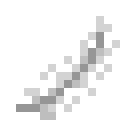

调校
一个练完的模型还可以改。调校台拿一个已保存的模型，原样留着它，再从它做出一个新的：更接近你的意思，多担一份工作，或者小到能随身带走。
调校台
制造机用 Transformer 光掩模制造调校台。左边放已保存的模型，右边放空白检查点，模型下面放这种调校方式需要的东西，然后启动。显示屏上，青色是奖励，琥珀色是真正对了多少，下面是每次尝试的标记，还有模型最后写的东西。产出的模型跑过每一项测试，上面的分数是它自己的。调校台的界面，一部分一部分地看。
打开自动开始后，只要基础模型和空白检查点都在，它就开始，做好的东西从下面的漏斗出去，所以调校台和漏斗可以连成一条线。
微调
设为微调，旁边放数据集或档案驱动器，它就以一个不断下降的低学习率继续练习。问模型的任何问题都是一种形式：> 加所说的话，换行，= 加答案，只有 = 之后的部分才算数。
产出的模型保留自己的测试成绩。选定要留下哪一个之前，先和基础模型比一比。
旁边放两样，它就把两者混起来，这样模型能学新东西，又留得住原来的。
适配器与合并
适配器不动模型的任何矩阵，只在每个矩阵旁边教两个细长的矩阵该加多少。学习的数字少得多。第三个按钮决定它们有多细。最后它们会加进去，产出的是一个和别的没有两样的模型。
合并把同一个模型的两次调校合在一起。第二个放在基础模型旁边，取两者的平均。再在下面放它们共同的来源，就取那个模型，加上两者各自的改动，这样一个模型能担两份工作。
你自己的话
 无序合成
无序合成



设为选择，旁边放偏好记录，它会显示基础模型对一条指令写的两个答案，你选一个，或者都不选。也可以输入你自己的指令，让它就这条来问。每次选择都记进记录。记录里至少有四次选择后，启动调校台，它就让你选的比没选的更可能出现。
你的选择能让熟悉的词带上你自己的意思。也拿其他指令试试新模型：学会这些偏好，可能会改变它对那些你没选过的说法的理解。
裁判
培养裁判教基础模型按偏好记录给答案打分，让被选中的分数高过没被选中的。
对着裁判练让基础模型针对指令写答案，由那位裁判打分，把高于其他答案的那些一点点提高。第三个按钮决定把它拉住的力度，不让它离原来太远。拉得太松，它可能学会骗裁判。裁判也可以放进服务器的面板，在多个答案里挑一个：多想想。
验证
设为验证，基础模型对每个问题试八次，由检查器给每次打分。胜过其他的更可能出现，其余的相反。从来没有东西告诉它正确答案。第三个按钮决定试什么、怎么打分。
程序：实际效果会在沙盒里运行每个程序：一个编造出来的小地方，有仓库、田地和标记，分三种状态：指令要的东西在仓库里或者不在，白天或者夜里。程序的结果符合原意就算过，不管怎么写的。它碰不到世界。
程序测试用的是同样的检查，指令里的东西都没练过。达到 75% 的模型就算可信：它写的东西立刻运行，不再问你同不同意，不管多长。
检查器放过什么
检查器放过什么，模型就学什么，琥珀线会显示出来。程序：没有步骤失败只看程序有没有失败。像 stay 这样的程序，可以拿到奖励，却没有做指令要求的事。所以青线往上时，琥珀线也可能往下。
程序：读得通只看程序能不能读通。一个程序可以完全读得通，却做错了事。
精准熔炼
精准熔炼用基础模型玩完整的熔炼，按它在温区的那一档停留多久来打分，把停得最好的那些提高。这是通往精准测试的唯一途径：没有数据集能教它，因为练习只能告诉控制器它的选择有多好。要把熔炼稳在那一档，就得摸清矿石的节奏，在它漂走之前动手。精准测试按它最不拿手的矿石计分，达到 90% 才通过。针对这一档调校，可能会削弱普通控制；产出的模型同时保留两项测试成绩。
控制器通过这项测试后，冶炼炉一份矿石出六个锭：电力。
蒸馏
蒸馏让基础模型（一个小模型）向一个更大的被服务模型学习，学它对每个下一个词元的看法：旁边放一张调谐到那台服务器的中继卡。每一批都是向那台服务器提的一个普通问题，也要排队，所以服务器的界面能看到调校台用了多少。第三个按钮决定大模型对错误答案的看法显露多少。不放数据集时，它就从老师已通过的测试中选取练习，阅读除外。产出的模型也要独立接受测试。
小到放得下的模型可以放进智能体的脑袋，不再占用服务器。它能做什么，由它自己的成绩决定。它也可以当服务器的草稿模型。
 纸羽毛橡木木板云杉木板白桦木板丛林木板金合欢木板深色橡木木板苍白橡木木板绯红木板诡异木板红树木板竹板樱花木板偏好记录
纸羽毛橡木木板云杉木板白桦木板丛林木板金合欢木板深色橡木木板苍白橡木木板绯红木板诡异木板红树木板竹板樱花木板偏好记录